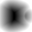
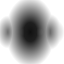
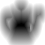

slice-x

APPROXIMATE ONLY — 384 open boundary edges. Three-ray agreement is not proof of a correct sign.
262144 voxels · 30991 negative samples · 6555 disagreements (2.50%). 6.9 seconds. Full distances are unclamped Float32, not these preview PNGs.



{
"schema": "alloy.volume-sdf.v1",
"dimensions": [
64,
64,
64
],
"settings": {
"resolution": 64,
"padding": 0.1,
"signMode": "approximate"
},
"signed": true,
"approximate": true,
"signConvention": "negative inside, zero surface, positive outside",
"storage": {
"file": "distance.f32",
"type": "IEEE754 Float32 little-endian",
"layout": "x-fastest; index = x + nx * (y + ny * z)",
"units": "source scene units",
"clamped": false
},
"confidence": {
"file": "sign-confidence.u8",
"type": "Uint8",
"values": {
"0": "unsigned mode; no sign",
"170": "only two of three rays agree; ambiguous",
"255": "all three parity rays agree (or on surface)"
},
"note": "Agreement is not a proof of correctness on an open or self-intersecting source."
},
"bounds": {
"min": [
-2.546989332747188,
-1.5969892850634724,
-1.8803227058169514
],
"max": [
2.8363508096453813,
1.5969892850634724,
1.8803227058169514
]
},
"voxelSpacing": [
0.0841146897248839,
0.04990591515823351,
0.05876008455677973
],
"voxelCenterOrigin": [
-2.504931987884746,
-1.5720363274843556,
-1.8509426635385615
],
"topology": {
"triangles": 36672,
"degenerate": 0,
"vertices": 20000,
"weldedVertices": 18529,
"weldTolerance": 0.000005469893327471881,
"boundaryEdges": 384,
"nonManifoldEdges": 0,
"orientationConflicts": 0,
"closedEdgeManifold": false,
"bounds": {
"min": [
-2,
-1.0499999523162842,
-1.3333333730697632
],
"max": [
2.2893614768981934,
1.0499999523162842,
1.3333333730697632
]
},
"diagonal": 5.4698933274718815
},
"stats": {
"voxels": 262144,
"negative": 30991,
"ambiguous": 6555,
"ambiguousFraction": 0.025005340576171875,
"min": -1.05591559883139,
"max": 2.261940348226294,
"bytes": 1310720
},
"sources": [
{
"name": "Utah teapot",
"triangles": 36672
}
],
"algorithm": "Exact Euclidean point-to-triangle distance via MeshBVH; sign by majority of three oblique ray parities, deduplicating coincident triangle hits. Topology audited by tolerance-welded edges; query geometry is not modified.",
"limitations": [
"A mesh volume, not a 2D surface texture or projection-height alias. Signing uses an odd-even fill rule, not a constructive union of overlapping solids.",
"Strict mode requires a closed consistently oriented edge-manifold source; topology checks cannot certify absence of geometric self-intersections.",
"Open/intersecting sources do not define an unambiguous solid. Approximate signs are explicitly flagged; use unsigned distances or supply a repaired closed mesh when reliable signs are required.",
"Samples are voxel centres, not voxel corners. Trilinear reconstruction introduces grid-resolution error; stored distances are unclamped Float32 values in scene units.",
"A 512×512 texture-map bake is independent of volume resolution. Volume resolution is bounded to 16–128 per axis and 250,000 source triangles."
],
"slicePreviews": {
"range": 0.8204839991207822,
"encoding": "preview gray = clamp(0.5 + signed distance / (2 * range),0,1); full float volume is not clamped"
},
"audit": {
"durationSeconds": 6.882,
"finite": true,
"status": "APPROXIMATE: source is open; no reliable closed-solid sign is claimed"
}
}